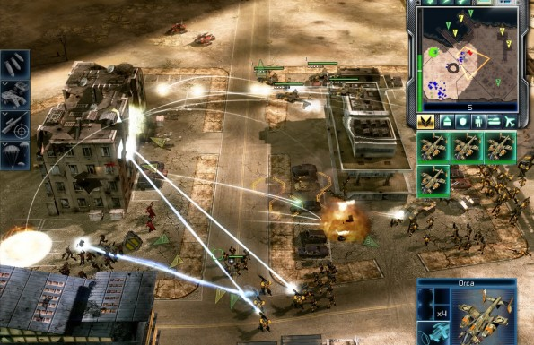

Command & Conquer 3: Tiberium Wars takes place within an alternate timeline, in which an alien substance called Tiberium lands on Earth in the 1990s and begins terra-forming the planet 's ecology and landscape. Although the substance creates crystals containing pre cious metals leeched from the surrounding soils, the process also transforms all plant life into alien fauna that produces fatally toxic gas. By the 2040s, the planet's ecological state has reached a critical level, making a number of locations uninhabitable for humans, and generating often violent ion storms that have left several major cities erecting storm barriers to counter these. Since its arrival, Tiberium has become of interest to two factions – the Global Defense Initiative (GDI), who seek to combat the spread and eradicate its presence; and the Brotherhood of Nod, who believes the substance heralds the next step of evolution for humanity, based on the prophecies and lessons by its enigmatic leader Kane. By the mid-2040s, all countries in the world cease to maintain political presence, either from social and economic collapse, or from passing on political power to GDI. As a result, while country boundaries are still retained, the world is remapped into three different geographical zones based on the levels of Tiberium contamination – Red Zones denote areas too toxic for human habitation, and consist of high concentrations of Tiberium; Yellow Zones denote considerable contamination, house most of the world's population, and is primarily controlled by Nod; Blue Zones denote low to minimal contamination, and house the last remnants of civilised life that is protected by GDI. Both GDI and Nod, as a result, slowly have evolved into the world's major superpowers, and retain constant distrust of the other. The game's story takes place in 2047, when Kane, having been presumed dead after the Second Tiberium War, returns and leads Nod into attacking Blue Zones after bringing down GDI's orbital command station, the GDSS Philadelphia, forcing GDI to engage them in return, and triggering the Third Tiberium War. When the conflict reaches a dramatic event from a liquid Tiberium explosion, an extraterrestrial faction called the "Scrin" suddenly invades the planet, and comes into conflict with both factions. The events of the campaigns for GDI, Nod, and the Scrin, are closely interwoven together in the same timeline, as with the Firestorm expansion pack for Tiberian Sun. The GDI campaign ending differs from the Nod and Scrin campaign endings.
Command & Conquer 3 features returning aspects of gameplay from the previous series. The player oversees the action, ordering multiple units to move and attack targets. The construction yard, a movable base, is the central platform from which the player constructs other structures. Certain structures can then produce units and resources are needed in order to fund the continuous building of structures and units. Typically the player's primary goal is to defeat an enemy by assaulting and destroying their base, while defending their own. A supporting structure, a crane, can be constructed which can also construct structures. Thus, when multiple production structures of the same type, such as cranes and barracks, are built, the player is given more queues from which to train and produce units and structures. Though these simultaneously save time, funds are deducted for the extra cost as well; careful management of production, training units and funds are key to strategy. When a structure is built, the player can select anywhere near an existing structure to place it, gaining more territorial control. Tiberium is the sole resource and is usually gathered from fields of Tiberium crystals scattered around the map. The crystals are gathered by harvester vehicles which unload their cargo into refineries, supplying the player with credits which are then automatically used when training units and building structures. Certain maps also feature Tiberium spikes, which, when captured by the faction's engineer unit, allocate a certain number of funds per second. Other neutral structures, such as an EMP weapon, are also present on maps to be captured. Base defense is provided by specialized defensive towers which are placed within a structure's territory. All three factions have structures and units with similar functions at their disposal. However, they are adjusted to fit each faction's theme and have somewhat varying properties. Units can be classified into infantry, vehicles and aircraft, each with their own specialities. Unit effectiveness against opponents follows the rock-paper-scissors principle found in most real-time strategy games. Virtually every type of structure in the game acts as a tech tree and additional units, structures and faction-specific abilities will become available to research and create as new structures are built. Production and construction may become temporarily blocked if the required structures are destroyed, or if they are not provided with adequate power by the supporting "power plant" structures. A highly destructive superweapon for each faction can also be constructed and used after a certain timer expires. Once used, the timer must expire again before the superweapon can be activated for an additional time. There are three factions playable in the game. The Global Defense Initiative fights with conventional modern weapons and tactics, utilizing both technologically advanced armor and firepower, making them typically more destructive in open confrontations, but more cumbersome. GDI's special weapon is the Ion Cannon, an orbital laser-guided energy strike. The Brotherhood of Nod features flexible guerrilla warfare forces, using stealth and Tiberium-based weaponry, though they are typically weaker. Like in the original Command & Conquer, their superweapon is Temple of Nod (Nuclear Missile Silo). The third faction, the alien Scrin, features units and structures that are Tiberium based, including the ability to promote the growth of the substance and to store infinite amounts of it. The Scrin are immune to the radioactive effects of Tiberium but vulnerable to anti-Tiberium weapons. Their superweapon is the "Rift Generator", which summons a vortex that pulls and damaging anything unfortunate enough to be caught in its blast.
